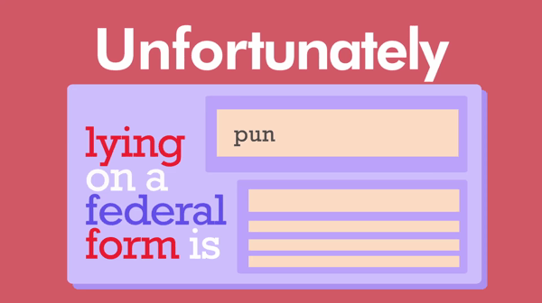

I am currently a student in the School of Interactive Arts and Technology program at Simon Fraser University..
Code:
<p>
I am currently a student in the School of Interactive Arts and Technology program at Simon Fraser University.
</p>
Assets
Bio:
Hey, I’m Kelvin.
I'm a multidisciplinary designer based in Vancouver interested in crafting unique experiences through visual design, motion graphics, and 2D/3D illustration.
I am currently a student in the School of Interactive Arts and Technology program at Simon Fraser University and am seeking for internship opportunities this Summer. Prior to attending Simon Fraser University, I studied Information Technology at Kwanten Polytechnic University for two years but ultimately found my way to design.
Project 1:
Kinetic Typography
SIAT Digital Image Design
Digital Image Design is a project-based course that uses core fundamentals of visual design and animation. The final project for this class was a one-minute kinetic typography using Adobe After Effects to evoke emotion by creating movement between text and figures.
My final kinetic typography was synced to a sound clip from Disney’s Zootopia which I labelled “Judy’s Hustle”. The challenges faced with this sound clip is the quick back and forth dialogue between the two main characters Judy the Rabbit and Nick the Fox.
Below is an in-depth process of the project from start to finish.
Starting with the storyboard, I tried to create the different text layouts that would be suitable for the typography. Although it was quite difficult to visualize the animations itself, I attempted to add them into my drawings.
After testing some of the story board ideas into After Effects, some of the initial ideas did not transfer over very well from paper. This was due to my lack of understanding of what After Effects was capable of.
Different concepts such as a virtual camera within a 3D space and manipulating framing became clear as I progressed onto the next steps. After some self-reflecting and a lot of YouTube typography tutorials, the project began to come together.
As I continued to gain more experience my technique had improved, and my overall work had evolved throughout every new sentence of dialogue. I began incorporating custom illustrations from Adobe Illustrator which further enhanced the projects aesthetic.
By end of the project I saw a disparity between the beginning of the video and the end. I ended up retracing my steps to ensure the whole video had the same standard of quality.

Project 2:
Kinetic Typography
SIAT Digital Image Design
Digital Image Design is a project-based course that uses core fundamentals of visual design and animation. The final project for this class was a one-minute kinetic typography using Adobe After Effects to evoke emotion by creating movement between text and figures.
My final kinetic typography was synced to a sound clip from Disney’s Zootopia which I labelled “Judy’s Hustle”. The challenges faced with this sound clip is the quick back and forth dialogue between the two main characters Judy the Rabbit and Nick the Fox.
Below is an in-depth process of the project from start to finish.
Starting with the storyboard, I tried to create the different text layouts that would be suitable for the typography. Although it was quite difficult to visualize the animations itself, I attempted to add them into my drawings.
After testing some of the story board ideas into After Effects, some of the initial ideas did not transfer over very well from paper. This was due to my lack of understanding of what After Effects was capable of.
Different concepts such as a virtual camera within a 3D space and manipulating framing became clear as I progressed onto the next steps. After some self-reflecting and a lot of YouTube typography tutorials, the project began to come together.
As I continued to gain more experience my technique had improved, and my overall work had evolved throughout every new sentence of dialogue. I began incorporating custom illustrations from Adobe Illustrator which further enhanced the projects aesthetic.
By end of the project I saw a disparity between the beginning of the video and the end. I ended up retracing my steps to ensure the whole video had the same standard of quality.
I'm a multidisciplinary designer based in Vancouver interested in crafting unique experiences through visual design, motion graphics, and 2D/3D illustration.
I am currently a student in the School of Interactive Arts and Technology program at Simon Fraser University and am seeking for internship opportunities this Summer. Prior to attending Simon Fraser University, I studied Information Technology at Kwanten Polytechnic University for two years but ultimately found my way to design.